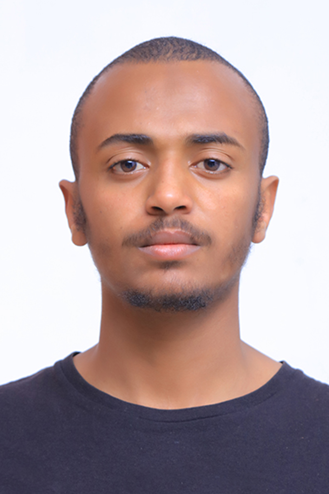

|

|
sulaiman awfa mohammed |
summary
##Who I Am
sulaiman awfa
Currently enrolled as a software engineering student at HELICO school of
computer technology.
**Expected Graduation:** [2025]
# My Journey into Software Engineering
My journey into the world of software engineering began with a significant
decision. I made the choice to follow my passion for coding and technology
by leaving my engineering education at Addis Ababa Science and Technology
University. It was a leap of faith that led me to enroll at Helico School
of Computer Technology, where I could pursue my dream of becoming a
software engineer.
## Early Questions and Determination
As I continued my education at Helico School, I found myself pondering a
crucial question:
Did I have to wait until I completed my degree to start my career in
software development? The desire to be financially independent and support
my education led me to seek opportunities to gain practical experience.
## Pursuing Full-Stack Development
I soon discovered that while some of the courses I had started might
require me to reach the third year of my program, I had the potential to
learn full-stack development independently. This realization marked the
beginning of my journey to become a full-stack developer.
## Developing My Skills
With a strong foundation in algorithmic thinking and proficiency in C++, I
decided to expand my skill set. I began my exploration of Java and delved
into various engineering courses that would provide me with the knowledge
base necessary for full-stack development.
## Ready for Real-World
Challenges Today, I am not only an advanced C++ programmer but also a
dedicated learner, eager to tackle real-world problems and create
innovative solutions. My journey from engineering to software development
has equipped me with the skills and mindset required to excel in the
field. As I continue to grow and learn, I look forward to applying my
knowledge to real-world projects, gaining valuable experience, and
evolving into a seasoned software developer. Thank you for joining me on
my journey in software engineering.
## What Drives Me
What truly motivates me as a software engineer is the potential to make a meaningful impact on
the world. Whether it's developing an efficient algorithm, creating an
intuitive user interface, or collaborating with a team to solve complex
challenges, I am driven by the belief that technology can be a force for
positive change.
## My Approach
I approach each project with a blend of
creativity and analytical thinking. I love diving deep into
problem-solving, breaking down complex problems into manageable
components, and crafting elegant solutions. I am also a firm believer in
the importance of continuous learning, staying updated with industry
trends, and expanding my skill set.
## Beyond Code Outside of coding
I am
a big fan of martial arts and football. These
activities provide me with a well-rounded perspective that often inspires
my work in unexpected ways.
SKILLS
- c++
- unlix operating system
- microsoft office suite
projects
c++ cli contact book
|
HTML project
 |